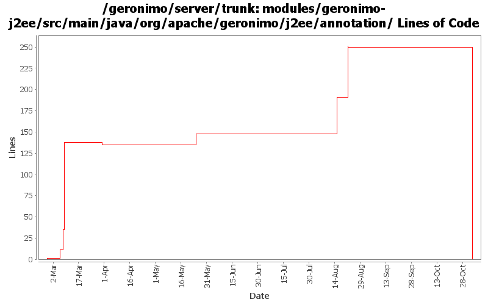

[root]/modules/geronimo-j2ee/src/main/java/org/apache/geronimo/j2ee/annotation

| Author | Changes | Lines of Code | Lines per Change |
|---|---|---|---|
| Totals | 17 (100.0%) | 336 (100.0%) | 19.7 |
| djencks | 9 (52.9%) | 212 (63.1%) | 23.5 |
| gawor | 4 (23.5%) | 123 (36.6%) | 30.7 |
| rickmcguire | 1 (5.9%) | 1 (0.3%) | 1.0 |
| prasad | 3 (17.6%) | 0 (0.0%) | 0.0 |
GERONIMO-3565. Modules distributed amongst framework/modules and plugins
0 lines of code changed in 3 files:
oops...
0 lines of code changed in 1 file:
switch from List to Set to eliminate duplicate injections (GERONIMO-3426)
77 lines of code changed in 2 files:
add a copy constructor to the Holder object
46 lines of code changed in 1 file:
GERONIMO-3246 Cleanup exception handling so stack traces for first failures are not discarded.
1 lines of code changed in 1 file:
GERONIMO-3188 Look for annotations in superclasses, and apply them when found
27 lines of code changed in 1 file:
GERONIMO-3052 Throw exceptions, don't ignore injection problems
5 lines of code changed in 1 file:
GERONIMO-2940, GERONIMO-2887 More injection work for app client and jetty: lifecycle methods verified on app client. Ear lib dir available to app client. Also upgrade to jetty snapshot for jetty lifecycle method support
135 lines of code changed in 2 files:
GERONMO-2887 More work to on injections and lifecycle methods
34 lines of code changed in 2 files:
GERONIMO-2887 put the injections and postCreate and preDestroy info in one object
10 lines of code changed in 2 files:
GERONIMO-2887 Start hooking up injection for jetty
1 lines of code changed in 1 file: